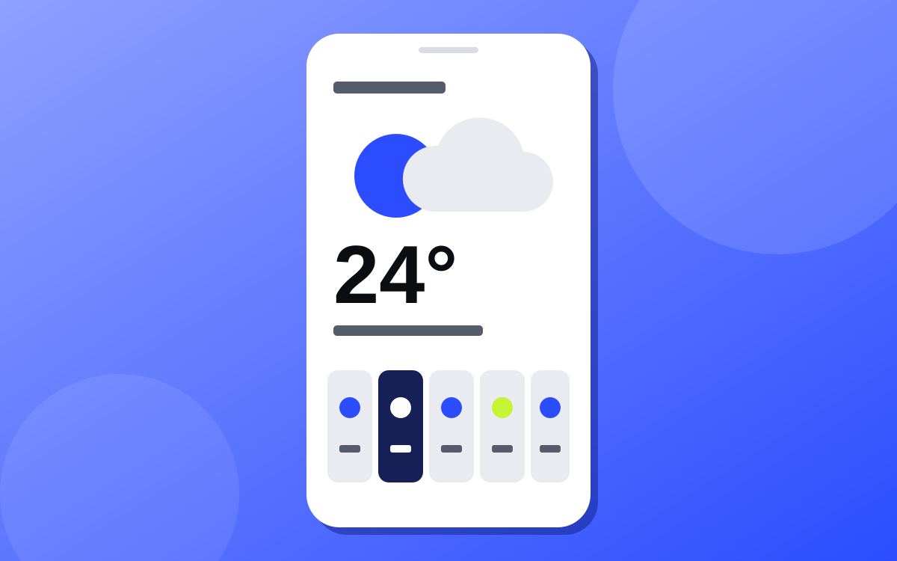

Botones
.button + --primary · --secondary · --ghost · --small
Las decisiones visuales del portafolio viven en css/tokens.css como variables CSS.
Todo lo que ves aquí es el componente real, con las mismas clases que usa la página principal.
Cambia el tema para ver cómo cada token se adapta.
Papel, tinta y un solo color de señal. El valor se lee en vivo del CSS.
--color-primary#c2410c--color-primary-hover#9a3412--color-primary-soft#fbe3d4--color-secondary#1f3a5f--color-background#f3f0e8--color-surface#fbfaf6--color-surface-alt#e9e5da--color-text#16150f--color-text-muted#5f5b50--color-border#d6d0c1--color-success#2f7d4f--color-danger#b42318Serif editorial para títulos, sans para lectura, mono para datos.
--font-display--font-body--font-monoh1 · --text-3xlInterfaces claras
h2 · --text-2xlProyectos destacados
h3 · --text-mdTítulo de tarjeta o grupo
p · --text-basePárrafo de lectura. Interlineado de 1.65 y ancho máximo de 65 caracteres para que el texto sea cómodo de leer en cualquier pantalla.
Texto secundario para notas, fechas y descripciones de apoyo.
.text-linkEscala con base de 4 px. Los nombres indican múltiplos de 4.
--space-10.25rem · 4px--space-20.5rem · 8px--space-30.75rem · 12px--space-41rem · 16px--space-61.5rem · 24px--space-82rem · 32px--space-123rem · 48px--space-164rem · 64px--space-246rem · 96pxLa sombra desplazada (offset) es la firma visual del sitio.
--radius-sm0.375rem--radius-md0.75rem--radius-lg1.25rem--radius-pill999px--shadow-smRelieve mínimo--shadow-cardTarjetas--shadow-lgModales--shadow-offsetHover y fichaLas mismas clases de components.css que usa el portafolio.
.button + --primary · --secondary · --ghost · --small
.icon-button · .back-to-top · .text-link
.tag · .status-pill · .chip[aria-pressed]
JavaScript (ES6+)
Evidencia: Clima Ahora
React
Aprendiendo
.skill · .skill__icon (tono con --skill-hue) · .level[data-level]

App del clima ligera que consume una API pública.
Problema: apps pesadas en móviles de gama baja.
Este es el mismo modal .modal que se abre en la página principal. Se construye con el elemento nativo <dialog>, se cierra con Esc, con el botón o haciendo clic fuera.
.project-card · __media · __body · __problem · __footer — abre .modal
.field · .input · .select · .textarea · [aria-invalid]
.spec-list · .channel
El encabezado de esta página es el componente real: fijo al hacer scroll, con menú hamburguesa en móvil y el enlace activo subrayado.
.site-header · .nav__link[aria-current] · .nav-toggle
.toast · .palette · .modal